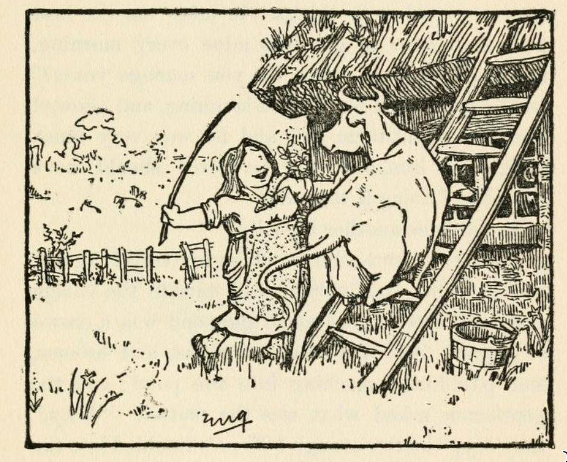

The Three Sillies#
This is one of the stories that appears widely in English folk-tale collections, although I don’t recall any particular examples of having heard it myself. From the briefest refreshers of the bones of the tale, I told it myself for the first time at &Spoken Word at Monkton Arts* in May, 2024. Coming in at about 11 minutes, the scope for humour is plentiful. The tale ends as a “happily ever after”, with an opportunity to say there are fools everywhere, but one comment was that it missed a kicker (a topper, or a twist), at the end.
The version that seems to appear most commonly in English folk-tale collections is the one published by Jacobs in his English Fairy Tales:
Jacobs, The Three Sillies, 1895
English Fairy tales; Joseph Jacobs, 1895, pp. 11-17.
THE THREE SILLIES.
ONCE upon a time there was a farmer and his wife who had one daughter, and she was courted by a gentleman. Every evening he used to come and see her, and stop to supper at the farmhouse, and the daughter used to be sent down into the cellar to draw the beer for supper. So one evening she had gone down to draw the beer, and she happened to look up at the ceiling while she was drawing, and she saw a mallet stuck in one of the beams. It must have been there a long, long time, but somehow or other she had never noticed it before, and she began a-thinking. And she thought it was very dangerous to have that mallet there, for she said to herself: “Suppose him and me was to be married, and we was to have a son, and he was to grow up to be a man, and come down into the cellar to draw the beer, like as I’m doing now, and the mallet was to fall on his head and kill him, what a dreadful thing it would be!” And she put down the candle and the jug, and sat herself down and began a-crying.
Well, they began to wonder upstairs how it was that she was so long drawing the beer, and her mother went down to see after her, and she found her sitting on the settle, crying, and the beer running over the floor. “Why, whatever is the matter?” said her mother, “Oh, mother!” says she, “look at that horrid mallet! Suppose we was to be married, and was to have a son, and he was to grow up, and was to come down to the cellar to draw the beer, and the mallet was to fall on his head and kill him, what a dreadful thing it would be!” “Dear, dear! what a dreadful thing it would be!” said the mother, and she sat her down aside of the daughter and started a-crying, too. Then, after a bit, the father began to wonder that they didn’t come back, and he went down into the cellar to look after them himself, and there they two sat a-crying, and the beer running all over the floor. “Whatever is the matter?” says he. “Why,” says the mother, “look at that horrid mallet. Just suppose, if our daughter and her sweetheart was to be married, and was to have a son, and he was to grow up, and was to come down into the cellar to draw the beer, and the mallet was to fall on his head and kill him, what a dreadful, thing it would be!” “Dear, dear, dear! so it would!” said the father, and he sat himself down aside of the other two, and started a-crying.
Now the gentleman got tired of stopping up in the kitchen by himself, and at last he went down into the cellar too, to see what they were after; and there they three sat a-crying side by side, and the beer running all over the floor. And he ran straight and turned the tap. Then he said: “Whatever are you three doing, sitting there crying, and letting the beer run all over the floor?” “Oh!” says the father, “look at that horrid mallet! Suppose you and our daughter was to be married, and was to have a son, and he was to grow up, and was to come down into the cellar to draw the beer, and the mallet was to fall on his head and kill him!” And then they all started a-crying worse than before. But the gentleman burst out a-laughing, and reached up and pulled out the mallet, and then he said: “I’ve traveled many miles, and I never met three such big sillies as you three before; and now I shall start out on my travels again, and when I can find three bigger sillies than you three, then I’ll come back and marry your daughter.” So he wished them good-by, and started off on his travels, and left them all crying because the girl had lost; her sweetheart.
“Well, he set out, and he traveled a long way, and at last he came to a woman’s cottage that had some grass growing on the roof. And the woman was trying to get her cow to go up a ladder to the grass, and the poor thing durst not go. So the gentleman asked the woman what she was doing. “Why, lookye,” she said, “look at all that beautiful grass, I’m going to get the cow on to the roof to eat it. She’ll be quite safe, for I shall tie a string round her neck, and pass it down the chimney, and tie it to my wrist as I go about the house, so she can’t fall off without my knowing it.” “Oh, you poor silly!” said the gentleman, “you should cut the grass and throw it down to the cow!” But the woman thought it was easier to get the cow up the ladder than to get the grass down, so she pushed her and coaxed her and got her up, and tied a string round her neck, and passed it down the chimney, and fastened it to her own wrist. And the gentleman went on his way, but he hadn’t gone far when the cow tumbled off the roof, and hung by the string tied round her neck, and it strangled her. And the weight of the cow tied to her wrist pulled the woman up the chimney, and she stuck fast halfway and was smothered in the soot.
Well, that was one big silly.

And the gentleman went on and on, and he went to an inn to stop the night, and they were so full at the inn that they had to put him in a double-bedded room, and another traveler was to sleep in the other bed. The other man was a very pleasant fellow, and they got very friendly together; but in the morning, when they were both getting up, the gentleman was surprised to see the other hang his trousers on the knobs of the chest of drawers and run across the room and try to jump into them, and he tried over and over again, and couldn’t manage it; and the gentleman wondered whatever he was doing it for. At last he stopped and wiped his face with his handkerchief. “Oh dear,” he says, “I do think trousers are the most awkwardest kind of clothes that ever were. I can’t think who could have invented such things. It takes me the best part of an hour to get into mine every morning, and I get so hot! How do you manage yours?” So the gentleman burst out a-laughing, and showed him how to put them on; and he was very much obliged to him, and said he never should have thought of doing it that way.
So that was another big silly.
Then the gentleman went on his travels again; and he came to a village, and outside the village there was a pond, and round the pond was a crowd of people. And they had got rakes, and brooms, and pitchforks, reaching into the pond; and the gentleman asked what was the matter. “Why,” they say, “matter enough! Moon’s tumbled into the pond, and we can’t rake her out anyhow!” So the gentleman burst out a-laughing, and told them to look up into the sky, and that it was only the shadow in the water. But they wouldn’t listen to him, and abused him shamefully, and he got away as quick as he could.
So there was a whole lot of sillies bigger than them three sillies at home. So the gentleman turned back home again and married the farmer’s daughter, and if they didn’t live happy forever after, that’s nothing to do with you or me.
As ever, Jacobs provides notes as to his sources:
Jacobs, The Three Sillies [Notes]
Notes, [p. 268].
Source.— From Folk-Lore Journal, ii, 40-3; to which it was communicated by Miss C. Burne.
Parallels. — Prof. Stephens gave a variant from his own memory in Folk-Lore Becord, iii. 155, as told in Essex at the beginning of the century. Mr. Toulmin Smith gave another version in The Constitutional, July 1, 1853, which was translated by his daughter, and contributed to Mélusine, t. ii. An Oxfordshire version was given in Notes and Queries, April 17, 1852. It occurs also in Ireland, Kennedy, “Fireside Stories,” p. 9. It is Grimm’s “Kluge Else,” No. 34, and is spread through the world. Mr. Clouston devotes the seventh chapter of his “Book of Noodles” to the Quest of the Three Noodles
Here is a typical retelling, from 1918:
In English Fairy tales, retold by Flora Annie Steel, 1918
English Fairy tales, retold by Flora Annie Steel, 1918, pp. 103-110:
THE THREE SILLIES
ONCE upon a time, when folk were not so wise as they are nowadays, there lived a farmer and his wife who had one daughter. And she, being a pretty lass, was courted by the young squire when he came home from his travels.
Now every evening he would stroll over from the Hall to see her and stop to supper in the farm-house, and every evening the daughter would go down into the cellar to draw the cider for supper.
So one evening when she had gone down to draw the cider and had turned the tap as usual, she happened to look up at the ceiling, and there she saw a big wooden mallet stuck in one of the beams.
It must have been there for ages and ages, for it was all covered with cobwebs; but somehow or another she had never noticed it before, and at once she began thinking how dangerous it was to have the mallet just there.
“For,” thought she, “supposing him and me was married, and supposing we was to have a son, and supposing he were to grow up to be a man, and supposing he were to come down to draw cider like as I’m doing, and supposing the mallet were to fall on his head and kill him, how dreadful it would be!”
And with that she put down the candle she was carrying and seating herself on a cask began to cry. And she cried and cried and cried.
Now, upstairs, they began to wonder why she was so long drawing the cider; so after a time her mother went down to the cellar to see what had come to her and found her, seated on the cask, crying ever so hard, and the cider running all over the floor.
“Lawks a mercy me!” cried her mother, “whatever is the matter?”
“Oh, mother!” says she between her sobs, “it’s that horrid mallet. Supposing him and me was married and supposing we was to have a son, and supposing he was to grow up to be a man, and supposing he was to come down to draw cider like as I’m doing, and supposing the mallet were to fall on his head and kill him, how dreadful it would be!”
“Dear heart!” said the mother, seating herself beside her daughter and beginning to cry: “How dreadful it would be!”
So they both sat a-crying.
Now after a time, when they did not come back, the farmer began to wonder what had happened, and going down to the cellar found them seated side by side on the cask, crying hard, and the cider running all over the floor.
“Zounds!” says he, “whatever is the matter?”
“Just look at that horrid mallet up there, father,” moaned the mother. “Supposing our daughter was to marry her sweetheart, and supposing they was to have a son, and supposing he was to grow to man’s estate, and supposing he was to come down to draw cider like as we’re doing, and supposing that there mallet was to fall on his head and kill him, how dreadful it would be!”
“Dreadful indeed!” said the father, and seating him¬ self beside his wife and daughter started a-crying too.
Now upstairs the young squire wanted his supper; so at last he lost patience and went down into the cellar to see for himself what they were all after. And there he found them seated side by side on the cask a-crying, with their feet all a-wash in cider, for the floor was fair flooded. So the first thing he did was to run straight and turn off the tap. Then he said:
“What are you three after, sitting there crying like babies, and letting good cider run over the floor?”
Then they all three began with one voice, “Look at that horrid mallet! Supposing you and me/she was married, and supposing we / you had a son, and supposing he was to grow to man’s estate and supposing he was to come down here to draw cider like as we be, and supposing that there mallet was to fall down on his head and kill him, how dreadful it would be!”
Then the young squire burst out a-laughing, and laughed till he was tired. But at last he reached up to the old mallet and pulled it out, and put it safe on the floor. And he shook his head and said, “I’ve travelled far, and I’ve travelled fast, but never have I met with three such sillies as you three. Now I can’t marry one of the three biggest sillies in the world. So I shall start again on my travels, and if I can find three bigger sillies than you three, then I’m come back and be married — not otherwise.”
So he wished them good-bye and started again on his travels, leaving them all crying; this time because the marriage was off!
Well, the young man travelled far and he travelled fast, but never did he find a bigger silly, until one day he came upon an old woman’s cottage that had some grass growing on the thatched roof.
And the old woman was trying her best to cudgel her cow into going up a ladder to eat the grass. But the poor thing was afraid and durst not go. Then the old woman tried coaxing, but it wouldn’t go. You never saw such a sight! The cow getting more and more flustered and obstinate, the old woman getting hotter and hotter.
At last the young squire said, “It would be easier if you went up the ladder, cut the grass, and threw it down for the cow to eat.”
“A likely story that,” says the old woman. “A cow can cut grass for herself. And the foolish thing will be quite safe up there, for I’ll tie a rope round her neck, pass the rope down the chimney, and fasten tother end to my wrist, so as when I’m doing my bit o’ washing, she can’t fall off the roof without my knowing it. So mind your own business, young sir.”
Well, after a while the old woman coaxed and codgered and bullied and badgered the cow up the ladder, and when she got it on to the roof she tied a rope round its neck, passed the rope down the chimney, and fastened tother end to her wrist. Then she went about her bit of washing, and young squire he went on his way.
But he hadn’t gone but a bit when he heard the awfullest hullabaloo. He galloped back and found that the cow had fallen off the roof and got strangled by the rope round its neck, while the weight of the cow had pulled the old woman by her wrist up the chimney, where she had got stuck half-way and been smothered by the soot!
“That is one bigger silly,” quoth the young squire as he journeyed on. “So now for two more!”
He did not find any, however, till late one night he ar¬ rived at a little inn. And the inn was so full that he had to share a room with another traveller. Now his room-fellow proved quite a pleasant fellow, and they foregathered, and each slept well in his bed.
But next morning when they were dressing what does the stranger do but carefully hang his breeches on the knobs of the tallboy.
“What are you doing?” asks young squire.
“I’m putting on my breeches,” says the stranger; and with that he goes to the other end of the room, takes a little run, and tried to jump into the breeches.
But he didn’t succeed, so he took another run and another try, and another and another and another, until he got quite hot and flustered, as the old woman had got over her cow that wouldn’t go up the ladder. And all the time young squire was laughing fit to split, for never in his life did he see anything so comical.
Then the stranger stopped a while and mopped his face with his handkerchief, for he was all in a sweat. It s very well laughing,” says he, “but breeches are the most awkwardest things to get into that ever were. It takes me the best part of an hour every morning before I get them on. How do you manage yours?”
Then young squire showed him, as well as he could for laughing, how to put on his breeches, and the stranger was ever so grateful and said he never should have thought of that way.
“So that,” quoth young squire to himself, “is a second bigger silly.” But he travelled far, and he travelled fast without finding the third, until one bright night when the moon was shining right overhead he came upon a village. And outside the village was a pond, and round about the pond was a great crowd of villagers. And some had got rakes, and some had got pitchforks, and some had got brooms. And they were as busy as busy, shouting out, and raking, and forking, and sweeping away at the pond.
“What is the matter?” cried young squire, jumping off his horse to help. “Has any one fallen in?”
“Aye! Matter enough,” says they. “Can’t ee see moon’s fallen into the pond, an’ we can’t get her out nohow?”
And with that they set to again raking, and forking, and sweeping away. Then the young squire burst out laughing, told them they were fools for their pains, and bade them look up over their heads where the moon was riding broad and full. But they wouldn’t, and they wouldn’t believe that what they saw in the water was only a reflection. And when he insisted they began to abuse him roundly and threaten to duck him in the pond. So he got on his horse again as quickly as he could, leaving them raking and forking and sweeping away; and for all we know they may be at it yet!
But the young squire said to himself, “There are many more sillies in this world than I thought for; so I’ll just go back and marry the farmer’s daughter. She is no sillier than the rest.”
So they were married, and if they didn’t live happy ever after, that has nothing to do with the story of the three sillies.
And by Hartland in 1890, citing additional context from Miss Burne:
E.S. Hartland, English fairy and other folk tales
Edwin Sidney Hartland, English fairy and other folk tales, 1890, pp260-4
THE THREE SILLIES. [Folk-Lore Journal, vol. ii. p. 40.]
Once upon a time there was a farmer and his wife who had one daughter, and she was courted by a gentleman. Every evening he used to come and see her, and stop to supper at the farmhouse, and the daughter used to be sent down into the cellar to draw the beer for supper. So one evening she was gone down to draw the beer, and she happened to look up at the ceiling while she was drawing, and she saw an axe stuck into one of the beams. [Miss Burne, who collected this story, informs me that she finds the dangerous tool was, not an axe, but "a great big wooden mallet, as some one had left sticking there when they'd been making-up the beer," i.e., stopping up the barrels.] It must have been there a long, long time, but somehow or other she had never noticed it before, and she began a-thinking. And she thought it was very dangerous to have that axe there, for she said to herself: “Suppose him and me was to be married, and we was to have a son, and he was to grow up to be a man, and come down into the cellar to draw the beer, like as I’m doing now, and the axe was to fall on his head and kill him, what a dreadful thing it would be!” And she put down the candle and the jug, and sat herself down and began a-crying.
Well, they began to wonder upstairs how it was that she was so long drawing the beer, and her mother went down to see after her, and she found her sitting on the setluss crying, and the beer running over the floor. “Why whatever is the matter?” said her mother. “Oh, mother!” says she, “look at that horrid axe! Suppose we was to be married, and was to have a son, and he was to grow up, and was to come down to the cellar to draw the beer, and the axe was to fall on his head and kill him, what a dreadful thing it would be!” “Dear, dear! what a dreadful thing it would be!” said the mother, and she sat her down aside of the daughter and started a-crying too. Then after a bit the father began to wonder that they didn’t come back, and he went down into the cellar to look after them himself, and there they two sat a-crying, and the beer running all over the floor. “Whatever is the matter?” says he. “Why,” says the mother, “look at that horrid axe. Just suppose, if our daughter and her sweetheart was to be married, and was to have a son, and he was to grow up, and was to come down into the cellar to draw the beer, and the axe was to fall on his head and kill him, what a dreadful thing it would be!” “Dear, dear, dear! so it would!” said the father, and he sat himself down aside of the other two, and started a-crying.
Now the gentleman got tired of stopping up in the kitchen by himself, and at last he went down into the cellar too, to see what they were after; and there they three sat a-crying side by side, and the beer running all over the floor. And he ran straight and turned the tap. Then he said: “Whatever are you three doing, sitting there crying, and letting the beer run all over the floor?” “Oh!” says the father, “look at that horrid axe! Suppose you and our daughter was to be married, and was to have a son, and he was to grow up, and was to come down into the cellar to draw the beer, and the axe was to fall on his head and kill him!” And then they all started a-crying worse than before. But the gentleman burst out a-laughing, and reached up and pulled out the axe, and then he said: “I’ve travelled many miles, and I never met three such big sillies as you three before; and now I shall start out on my travels again, and when I can find three bigger sillies than you three, then I’ll come back and marry your daughter.” So he wished them good-bye, and started off on his travels, and left them all crying because the girl had lost her sweetheart
Well, he set out, and he travelled a long way, and at last he came to an old woman’s cottage that had some grass growing on the roof. And the old woman was trying to get her cow to go up a ladder to the grass, and the poor thing durst not go. So the gentleman asked the old woman what she was doing. “Why, lookye,” she said, “look at all that beautiful grass. I’m going to get the cow on to the roof to eat it. She’ll be quite safe, for I shall tie a string round her neck, and pass it down the chimney, and tie it to my wrist as I go about the house, so she can’t fall off without my knowing it.” “Oh, you poor old silly!” said the gentleman, “you should cut the grass and throw it down to the cow!” But the old woman thought it was easier to get the cow up the ladder than to get the grass down, so she pushed her and coaxed her and got her up, and tied a string round her neck, and passed it down the chimney, and fastened it to her own wrist. And the gentleman went on his way, but he hadn’t gone far when the cow tumbled off the roof, and hung by the string tied round her neck, and it strangled her. And the weight of the cow tied to her wrist pulled the old woman up the chimney, and she stuck fast half-way, and was smothered in the soot.
Well, that was one big silly.
And the gentleman went on and on, and he went to an inn to stop the night, and they were so full at the inn that they had to put him in a double-bedded room, and another traveller was to sleep in the other bed. The other man was a very pleasant fellow, and they got very friendly together; but in the morning, when they were both getting up, the gentleman was surprised to see the other hang his trousers on the knobs of the chest of drawers and run across the room and try to jump into them, and he tried over and over again, and couldn’t manage it; and the gentleman wondered whatever he was doing it for. At last he stopped and wiped his face with his handkerchief. “Oh dear,” he says, “I do think trousers are the most awkwardest kind of clothes that ever were. I can’t think who could have invented such things. It takes me the best part of an hour to get into mine every morning, and I get so hot! How do you manage yours?” So the gentleman burst out a-laughing, and showed him how to put them on; and he was very much obliged to him, and said he never should have thought of doing it that way. So that was another big silly.
Then the gentleman went on his travels again; and he came to a village, and outside the village there was a pond, and round the pond was a crowd of people. And they had got rakes, and brooms, and pikels (pitchforks), reaching into the pond; and the gentleman asked what was the matter. “Why,” they says, “matter enough! Moon’s tumbled into the pond, and we can’t get her out anyhow!” So the gentleman burst out a-laughing, and told them to look up into the sky, and that it was only the shadow in the water. But they wouldn’t listen to him, and abused him shamefully, and he got away as quick as he could. [Miss Burne writes to me as follows:— "I find my sister-in-law, also a Staffordshire woman, knew the story when a child, with the variation of an old woman weeding by candlelight at noonday, instead of the moonrakers." The story has many variants; but I know of none better told than this.]
So there was a whole lot of sillies bigger than them all, and the gentleman turned back home again and married the farmer’s daughter.
Jacob’s credits Charlotte Burne, writing in The Folk-lore journal, 1884, as his source for the story:
Collected by Charlotte Burne, 1862
In The Folk-lore journal, Vol. II (January-December 1884), 1884, pp. 40-43:
VARIANT OF THE THREE NOODLES.
Told in 1862 (and afterwards) by a nursemaid then aged sixteen, a native of Houghton, near Stafford.
ONCE upon a time there was a farmer and his wife who had one only daughter, and she was courted by a gentleman.
Every evening he used to come to see her, and stop to supper at the farmhouse, and the daughter used to be sent down into the cellar to draw the beer for supper. So one evening she was gone down to draw the beer, and she happened to look up at the ceiling while she was drawing, and she saw an axe stuck into one of the beams. [I cannot feel certain whether it was not a hammer or some other tool in my nurse's story, and whether I may not have unconsciously borrowed the axe from Grimm's Kluge Else.] It must have been there a long, long time, but somehow or other she had never noticed it before, and she began a-thinking. And she thought it was very dangerous to have that axe there, for she said to herself, “Suppose him and me was to be married, and we was to have a son, and he was to grow up to be a man, and come down into the cellar to draw the beer, like as I’m doing now, and the axe was to fall on his head and kill him, what a dreadful thing it would be!” And she put down the candle and the jug, and sat herself down and began a-crying.
Well, they began to wonder upstairs how it was that she was so long drawing the beer, and her mother went down to see after her, and she found her sitting on the setluss crying, and the beer running over the floor. “Why, whatever is the matter?” said her mother. “Oh, mother!” says she, “look at that horrid axe! Suppose we was to be married, and was to have a son, and he was to grow up, and was to come down into the cellar to draw the beer, and the axe was to fall on his head and kill him, what a dreadful thing it would be!” “Dear, dear! what a dreadful thing it would be!” said the mother, and she sat her down aside of the daughter and started a-crying too.
Then, after a bit, the father began to wonder that they didn’t come back, and he went down into the cellar to look after them himself, and there they two sat a-crying, and the beer running all over the floor. “Whatever is the matter?” says he. “Why,” says the mother, “look at that horrid axe. Just suppose, if our daughter and her sweetheart was to be married, and was to have a son, and he was to grow up, and was to come down into the cellar to draw the beer, and the axe was to fall on his head and kill him, what a dreadful thing it would be!” “Dear, dear, dear! so it would!” said the father, and he sat himself down aside of the other two, and started a-crying.
Now the gentleman got tired of stopping up in the kitchen by himself, and at last he went down into the cellar too to see what they were after; and there they three sat a-crying side by side, and the beer running all over the floor. And he ran straight and turned the tap. Then he said, “Whatever are you three doing, sitting there crying, and letting the beer run all over the floor?” “Oh!” says the father, “look at that horrid axe! Suppose you and our daughter was to be married, and was to have a son, and he was to grow up, and was to come down into the cellar to draw the beer, and the axe was to fall on his head and kill him!” And then they all started a-crying worse than before. But the gentleman burst out a-laughing, and reached up and pulled out the axe, and then he said, “I’ve travelled many miles, and I never met three such big sillies as you three before; and now I shall start out on my travels again, and when I can find three bigger sillies than you three then I’ll come back and marry your daughter.” So he wished them good-bye, and started off on his travels, and left them all crying because the girl had lost her sweetheart.
Well, he set out, and he travelled a long way, and at last he came to an old woman’s cottage that had some grass growing on the roof. And the old woman was trying to get her cow to go up a ladder to the grass, and the poor thing durstn’t go. So the gentleman asked the old woman what she was doing. “Why, lookye,” she said, “look at all that beautiful grass. I’m going to get the cow on to the roof to eat it. She’ll be quite safe, for I shall tie a string round her neck, and pass it down the chimney, and tie it to my wrist as I go about the house, so she can’t fall off without my knowing it.” “Oh, you poor old silly!” said the gentleman, “you should cut the grass and throw it down to the cow!” But the old woman thought it was easier to get the cow up the ladder than to get the grass down, so she pushed her and coaxed her and got her up, and tied a string round her neck, and passed it down the chimney, and fastened it to her own wrist. And the gentlewian went on his way, but he hadn’t gone far when the cow tumbled off the roof, and hung by the string tied round her neck, and it strangled her. And the weight of the cow tied to her wrist pulled the old woman up the chimney, and she stuck fast half-way and was smothered in the soot.
Well, that was one big silly.
And the gentleman went on and on, and he went to an inn to stop the night, and they were so full at the inn that they had to put him in a double-bedded room, and another traveller was to sleep in the other bed. The other man was a very pleasant fellow, and they got very friendly together; but in the morning, when they were both getting up, the gentleman was surprised to see the other hang his trousers on the knobs of the chest of drawers [Chests of drawers with knobbed handles are an invention of this century so this nust be a very recent variation of the story.] and run across the room and try to jump into them, and he tried over and over again and couldn’t manage it, and the gentleman wondered whatever he was doing it for. At last he stopped and wiped his face with his handkerchief. “Oh dear!” he says, “I do think trousers are the. most awkwardest kind of clothes that ever were. I can’t think who could have invented such things. It takes me the best part of an hour to get into mine every morning, and I get so hot! How do you manage yours?” So the gentleman burst out a-laughing, and showed him how to put them on, and he was very much obliged to him, and said he never should have thought of doing it that way.
So that was another big silly.
Then the gentleman went on his travels again: and he came to a village, and outside the village there was a pond, and round the pond was a crowd of people. And they had got rakes, and brooms, and pickels [= pitchforks] reaching into the pond, and the gentleman asked what was the matter. “Why,” they says, “matter enough! moon’s tumbled into the pond, and we can’t get her out anyhow!” So the gentleman burst out a-laughing, and told them to look up into the sky, and that it was only the shadow in the water. But they wouldn’t listen to him, and abused him shamefully, and he got away as quick as he could.
So there was a whole lot of sillies bigger than them all, and the gentleman turned back home. again and married the farmer’s daughter. [References to parallel stories in Folk-Lore Record, vol. iii. p. 156. See also the "Three Goodies," [Not A Pin To Choose Between Them] in Popular Tales from the Norse, and another parallel in Campbell's Tales of the Western Highlands, vol. ii. No. xlviii. Cf. No. xx.]
Charlotte S. Burne.
Burne (and Jacobs) also credit a parallel version claimed to have been told in Essex around about 1800, that appeared in The Folk-lore record, 1888:
The Three Noodles, 1878
In The Folk-lore record, iii., 1878, p155-6
THE THREE NOODLES, OR THE HEAVEN MIGHT HAVE FALLEN,
As told in Essex about the Year 1800.
There was once an old woman who left her daughter at home to get dinner ready when she went to church. On coming back she found nothing in order, and her daughter crying by the fireplace. “Heyday! what now?” said the incomer. “Why, do you know,” replied the girl, “as I was going to cook the dinner a brick fell down the chimney, and, you know, it might have killed me!”
In a little while the husband came in, and, finding both weeping, began, “What’s the matter here? All in tears?” “Why,” said his wife, “do you know, that as Sally was going to get the dinner ready a brick fell down the chimney, and, you know, it might have killed her!”
Shortly after entered Sally’s sweetheart, and, seeing the confusion, burst out, “Why! how now? What! all weeping?” “Why, do you know,” whimpered the father, “as Sally was going to cook the dinner a brick fell down the chimney, and, you know, it might have killed her!”
“Well,” said the young man, “of all the fools I’ve seen you are the three greatest, and when I find three as great as you I’ll come back and marry your daughter.”
So away he went, till he came to where an old body should bake, but bewailed her ill fortune, for she was trying in vain to drag the oven with a rope to the table where the dough lay. “Oh! you ninny!” exclaimed the young man; “you should take the bread to the oven, and not pull the oven to the bread. Well, that’s indeed fool number one.” “I didn’t think of that,” mumbled she.
Then he wandered further — a long, long way — till he reached a place where an old wife should feed her cow with grass that grew on the roof of her cottage; but, instead of throwing down the grass to the cow, she was trying to draw the cow up to the roof. “Hallo! stupid!” exclaimed he, laughing, “cut the grass and cast it down to the cow, to be sure. Well, that’s fool number two, but it will be long enough ere I meet such another.”
But, as he jogged along after this, he came to where a man was trying to put his breeches on. But, instead of holding them in his hand, he had propped them up with sticks, and was, to no purpose, taking run after run, to jump right into them. “Well, here indeed I have fool number three,” cried the lass’s sweetheart, turning home-wards. So he went back to her cottage, and married Sally, the old woman’s daughter.
Parallels: Norse, Asbjornsen and Moe, vol. i. p. 10, Somme Kjaeringer er slige. German, Grimm, Die kluge else. Irish, Gerald Griffin, Collegians, p. 139; Kennedy’s Fireside Stories of Ireland, p. 9. Another English version, from Oxfordshire, in Notes and Queries, April 17, 1852, p. 363.
Another parallel was reported in Notes & Queries, 1852:
“Thoughtful Moll”, N&Q, 1852
In Notes and Queries, Vol 5 Iss 129, April 17th, 1852, pp.363-4
POPULAR STORIES OF THE ENGLISH PEASANTRY, NO. I.
Only a few years before the advent of Ambrose Merton, it was the sorrowful lament of Picken that he could find no legendary lore among our English peasantry. The rapid progress of education, according to him, had long ago banished our household traditions. Want of acquaintance with the shy and reserved character of John Bull probably proved a stumbling-block to our collector, for what a rich harvest has been reaped since his day! Our mythic treasures, however, are far from being exhausted; and if we wish to emulate our brethren of Deutschland, we must do yet more. The popular tales and legends which abound among our rural population, are still for the most part ungarnered. The folk-tales of the sister kingdoms have been ably chronicled in the pages of Croker and Chambers, but our own have been almost entirely neglected. So much indeed is this the case, that we have had recourse to Germany in order to recruit our exhausted nursery literature; and readers of all sizes devour with avidity the charming versions of the Messieurs Taylor, few of them suspecting that stores of like character form the sole imaginative lore of their uneducated countrymen.
Some years ago while in the country I made a practice of noting down the more curious traditionary stories which came under my notice; and, with the kind permission of the Editor, will transfer a few portions of my researches to the columns of “N. & Q.,” in the hope of inducing some of your rural correspondents to embark in a similar design. I am aware that certain antiquaries of the old régime still entertain doubts as to the utility of these collections. As vestiges, however, of primitive fiction, they will interest the philosophical inquirer; while their value as contributions to ethnological and philological science has been recognised by all writers on the subject.
Premising that these tales, however puerile, are not associated with any such idea by the people among whom they were gathered, permit me to introduce your readers to “Thoughtful Moll,” in whom they will trace a remarkable resemblance to Die kluge Else of Grimm. It is from Oxfordshire, and affords no bad specimen of the facetious class of fables which often enliven the winter’s evening hearth-talk. I have endeavoured to preserve the narrators’ style and dialect.
In a certain village there once lived a young woman so extremely noted for prudence and forethought, that she was known among her neighbours as “Thoughtful Moll.” Now this young lady had a thirsty soul of a sweetheart, who dearly loved a drop of October, and one day when he came a-wooing to her: “O Moll,” says he, “fill us a tot o’yeal [Tot, a mug; yeal, ale], I be most mortal dry.” So Moll took a tot from the shelf and went down the cellar, where she tarried so long that her father sent down her sister to see what had come of her. When she got there she found her sister weeping bitterly. “What ails thee, wench?” said she. “O!” sobbed Moll, “don’t ye see that stwon in the arch, that stands out from the mortar like? Now, mayhaps, when I be married an have a bwoy, an he comes down here to draw beer, that big
stwon’ll fall down on’m and crush’m.” “Thoughtful Moll!” said her admiring sister, and the two sat down and mingled their tears together. The drink not being forthcoming, another sister is despatched, and she also stops. Meantime Dob grew chafed at the delay, and went down himself to look after his love and his beer. When he hears the cause of the stoppage, he falls into a violent rage, and declares he won’t have Moll unless he can find three bigger fools than herself and sisters. It is noonday when Dob sets out on his travels; and the first person he saw was an old woman, who was running about and brandishing her bonnet in the sunshine:What bist at, Dame?” says Dob. “Why,” said the old woman; “I’m ketchin’ sunshine in this here bonnet to dry me earn as a’ leased in wet.” “Mass!” quoth Dob, “that’s one fool.” And so on he went till he came to another Gothanite, who was dragging about the corn-fields a huge branch of oak. “What may ye be a-doin’ wi’ that, Measter?” says Dob. “Kaint ye see?” says the man; “I’m a gettin’ the crows to settle on this branch, they’ve had a’most all me crop a’ready.” “The devil you are!” said Dob, as he went on his way. He meets no one else for a long time, and almost despairs of completing his number, when at last he sees an old woman trying all she could to get a cow to go up a ladder. “What are ye arter there, Missus?” says he. “Dwunt ye see, young mon?” says she; “I’ma drivin’ this keow up the lather t’eat the grass aff the thack [lather: ladder; thack: thatch].” “Deary me!” says Dob, “one fool makes many.” And so he turned back, and married Moll; with whom he lived long and happily, if not wisely.
Besides Grimm’s version, we meet with a somewhat similar fable in Ireland. Vide Gerald Griffin’s Collegians, p. 139.
Another pretty numerous class of our popular stories consists of those in which animals are made the actors. One of the most common of these relates to the strife between the fox and the hedgehog, who, according to the good people of Northamptonshire, are the two most astute animals in creation. How a couple of these worthies once fell out as to which was the swifter animal; and how, when they had put their speed to the trial, the cunning urchin contrived to defeat Reynard by placing his consort in the furrow which was to form the goal: so that when her mate had made a pretence of starting, she might jump out and feign to be himself just arrived. And how, after three desperate runs, the broken-winded fox fell a victim to the deceit, and was compelled to yield to his adversary; who, ever since that day, has been his most inveterate enemy. This myth is curious on many accounts, for the hedgehog has always been regarded as an emblem of subtlety. Grimm gives a tale precisely similar, with the exception that it is a hare and not a fox who is deceived by the ruse. Aldrovandus likewise tells us much on the score of his craft; and it was probaby some mythic connexion between the animals which led Archilochus to class them together in the adage:
Poll ols alapne all exinos en mega
Your readers will also call to mind the fable of AElian, lib. iv., cap. xviii.
T. Sternberg
A Scots variant is found in Campbell’s Popular tales of the west Highlands, 1860 (the following is taken from a later edition). This includes elements reminiscent of the “wives competing as to who has the most foolish husband” tale (see section at end).
In Campbell, Popular tales of the west Highlands, 1860
J. F. (John Francis) Campbell, Popular tales of the west Highlands, 1890, pp. 388-92:
XLVIII.
THE TALE OF SGIRE MO CHEALAG.
From John Campbell, Strath Gairloch, Ross.
THERE was once a young lad, and he went to seek a wife to Sgire mo Chealag; and he married a farmer’s daughter, and her father had but herself. And when the time of cutting the peats came on, they went to the peat hag, the four.
And the young wife was sent home to seek the food; and when she had gone in she saw the speckled filly’s packsaddle over her head, and she began to cry, and to say to herself, —
“What should she do if the packsaddle should fall, and kill herself and all that were to follow.”
When the people who were gathering the peats found that she was long without coming, they sent her mother away to see what was keeping her, and when the carlin arrived she found the bride crying,
“That it should come to me!”— Said she, “What came to thee?”
“Oh,” said she, “when I came in I saw the speckled filly’s packsaddle over my head, and what should I do if it should fall and kill myself and all that are to follow!”
The old woman struck her palms. “It came to me this day! If that should happen, what shouldst thou do, or I with thee!”
The men who were in the peat-hag were thinking it long that one of the women was not coming, for hunger had struck them. So it was that the old man went home to see what was keeping the women, and when he went in it was so that he found the two crying, and beating their palms.
“O, uvon!” said he, “what came upon you?”
“O!” said the old woman, “when thy daughter came home, did she not see the speckled filly’s packsaddle over her head, and what should she do if it should fall and kill herself and all that were to follow!”
“It came upon me!” said the old man, as he struck his palms, “If that should happen!”
The young man came at the mouth of night, full of hunger, and he found a leash crying together.
“Oovoo!” said he, “what came upon you?” and when the old man told him;
“But,” said he, “the packsaddle did not fall.”
When he took his meat he went to lie down; and in the morning he said, “My foot shall not stay till I see other three as silly as ye.”
Then he went through Sgire mo Chealag, and he went into a house in it, and there was no man within but a leash of women, and they were spinning on five wheels.
“I myself will not believe,” said he, “that it is of the people of this place that you are.”
“Well, then,” said they, “it is not. We ourselves will not believe that it is of the people of the place that thou art thyself.”
“It is not,” said he.
“Weel,” said they, “the men that there are in this place are so silly, that we can make them believe anything that we please ourselves.”
“Weel,” said he, “I have here a gold ring, and I will give it to the one amongst you who will best make her husband believe.”
The first one that came home of the men, his wife said to him, “Thou art sick.”
“Am I,” said he.
“Oh thou art,” said she, “put off thee thy lot of clothes, and be going to lie down.”
He did this, and when he was in the bed she said to him, “Thou art now dead.”
“Oh, am I?” said he.
“Thou art,” said she, “shut thine eyes and stir not hand or foot.”
And now he was dead.
Then there came the second one home, and his wife said to him, “It is not thou.”
“O, is it not me?” said he.
And he went away and betook himself to the wood.
Then here came the third to his own house, and he and his wife went to lie down, and a summons went out on the morrow for the burial of the dead man, but this wife would not let her husband get up to go there.
When they saw the funeral going past the window, she told him to be rising. He arose in great haste, and he was seeking his set of lost clothes, and his wife said to him that his clothes were about him.
“Are they?” said he.
“They are,” said she: “Haste thee that thou mayest catch them.”
Here, then, he went, running hard. And when the funeral company saw the man who was stripped coming, they thought it was a man who was out of his reason, and they themselves fled away, and they left the funeral. And the naked man stood at the end of the dead-chest. And there came down a man out of the wood, and he said to the man who was naked, —
“Dost thou know me?”
“Not I,” said he, “I do not know thee.”
“Oh, thou dost not! if I were Tomas my own wife would know me.”
“But why,” said he, “art thou naked?”
“Am I naked? If I am, my wife told me that the clothes were about me.”
“It was my wife that said to me that I myself was dead,” said the man in the chest.
And when the men heard the dead speaking, they took their soles out (of that), and the wives came and they took them home, and it was the wife of the man who was dead that got the ring.
And then he saw three as silly as the three he left at home, and returned home.
And then he saw a boat going to fish, and there were twelve men counted going into the boat, and when she came to land, there was within her but eleven men, and there was no knowing which one was lost, for the one who was counting was not counting himself at all. And he was beholding this.
“What reward would you give me if I should find you the man that is lost by you?”
“Thou shalt get any reward if thou wilt find the man,” said they.
“Sit there,” said he, “beside each other;” and he seized a rung of a stick, and he struck the first one a sharp stroke.
“Mind thou that thou wert in her” (the boat).
He kept on striking them, till he had roused twelve men, and made them bleed on the grass.
And though they were pounded and wounded, it was no matter, they were pleased, because the man who was lost was found, and after the payment they made a feast for the one who had found the man who was lost.
The tenants of Sgire mo Chealag had a loch on which they used to put fish, and so it was that they needs must drain the loch, to get fresh fish for the feast; and when the loch was drained, there was not a single fish found on the loch but one great eel. Then they said, —
“This is the monster that ate our fish.” Then they caught her, and they went away with her to drown her in the sea. And when he saw this he went home; and on the way he saw four men putting a cow up to the top of a house that she might eat the grass that was growing on the house-top. Then he saw that the people of Sgire mo Chealag were men without intelligence; but said he, “What reward will you give me, and I will bring the grass down?”
He went and he cut the grass, and he gave it to the cow, and went on before him.
Then he saw a man coming with a cow in a cart, and the people of the town had found out that the man had stolen the cow, and that MOD a court should be held upon him, and so they did; and the justice they did was to put the horse to death for carrying the cow.
And to shew you that this tale is true, it was this that made Iain Lom the bard say:
“As law of ages that are not
As was Sgire mo Cheallag,
When doomed they the garron in mote.”
Grimm’s Variant, “Kluge Else”#
Perhaps unsurprisingly, there is a Grimm variant of the tale, “Kluge Else” (Clever Else). This includes the element of a person being so foolish as to not know whether they are themselves, as appears in Campbell’s version, albeit with respect to a different character.
Grimm’s tales were widely published in translation, and include the following versions:
Clever Alice, 1853
Jacob & Wilhelm Grimm, German popular tales and household stories, vol. 1, 1853, pp. 178-181
XXXTV.
Clever Alice.
ONCE upon a time there was a man who had a daughter who was called “Clever Alice” and when she was grown up, her father said, “We must see about her marrying.” “Yes,” replied the mother, “when one comes who may be worthy of her.”
At last a certain youth, by name Hans, came from a distance to make a proposal for her, but he put in one condition, that the Clever Alice should also be very prudent. “Oh,” said her father, “she has got a head full of brains and the mother added, “Ah, she can see the wind blow up the street, and hear the flies cough!”
“Very well,” replied Hans; “but if she is not very prudent, I will not have her.” Soon afterwards they sat down to dinner, and her mother said, “Alice, go down into the cellar and draw some beer.”
So Clever Alice took the jug down from the wall, and went into the cellar, jerking the lid up and down on her way to pass away the time. As soon as she got down stairs, she drew a stool and placed it before the cask, in order that she might not have to stoop, whereby she might do some injury to her back, and give it an undesirable bend. Then she placed the can before her and turned the tap, and while the beer was running, as she did not wish her eyes to be idle, she looked about upon the wall above and below, and presently perceived, after much peeping into this and that corner, a hatchet, which the bricklayers had left behind sticking out of the ceiling right above her. At the sight of this the Clever Alice began to cry, saying, “Oh, if I marry Hans, and we have a child, and he grows up, and we send him into the cellar to draw beer, the hatchet will fall upon his head and kill him;” and so saying, she sat there weeping with all her might over the impending misfortune.
Meanwhile the good folks upstairs were waiting for the beer, but as Clever Alice did not come, her mother told the maid to go and see what she Avas stopping for. The maid Avent down into the cellar, and found Alice sitting before the cask crying heartily, and she asked, “Alice, what are you weeping about?” “Ah!” she replied, “have I not cause? If I marry Hans, and we have a child, and he grow up, and we send him here to draw beer, that hatchet will fall upon his head and kill him.”
“Oh,” said the maid, “what a clever Alice we have!” And sitting down, she began to weep too for the misfortune that was to happen.
After a while, and the maid did not return, the good folks above began to feel very thirsty; and so the husband told the boy to go down into the cellar, and see what had become of Alice and the maid. The boy went down, and there sat Clever Alice and the maid both crying, so he asked the reason; and Alice told him the same tale of the hatchet that was to fall on her child as she had told the maid. When she had finished, the boy exclaimed, “What a clever Alice we have!” and fell weeping and howling with the others.
Upstairs they were still waiting, and the husband said, when the boy did not return, “Do you go down, wife, into the cellar and see why Alice stops.” So she went down, and finding all three sitting there crying, asked the reason, and Alice told her about the hatchet which must inevitably fall upon the head of her son. Then the mother likewise exclaimed, “Oh, what a clever Alice we have!” and, sitting down, began to weep witb the others. Meanwhile the husband waited for his wife’s return, but at last he felt so very thirsty that he said, “I must go myself down into the cellar and see what Alice stops for.” As soon as he entered the cellar, there he found the four sitting and crying together, and when he heard the reason, he also exclaimed, “Oh, what a clever Alice we have!” and sat down to cry with the others. All this time the bridegroom above sat waiting, but when nobody returned, he thought they must be waiting for him, and so he went down to see what was the matter. When he entered, there sat the five crying and groaning, each one in a louder key than his neighbour. “What misfortune has happened?” he asked. “Ah, dear Hans,” cried Alice, “if we should marry one another, and have a child, and he grow up, and we perhaps send him down here to tap the beer, the hatchet which has been left sticking there may fall on his head, and so kill him; and do you not think that enough to weep about?”
“Now,” said Hans, “more prudence than this is not necessary for my housekeeping; because you are such a clever Alice I will have you for my wife.” And, taking her hand, he led her home and celebrated the wedding directly.
After they had been married a little while, Hans said one morning, “Wife, I will go out to work and earn some money; do you go into the field and gather some corn wherewith to make bread.”
“Yes,” she answered, “I will do so, dear Hans.” And when he was gone, she cooked herself a nice mess of pottage, to take with her. As she came to the field, she said to herself, “What shall I do? Shall I cut first, or eat first? Ay, I will eat first!” Then she ate up the contents of her pot, and when it was finished, she thought to herself, “Now, shall I reap first or sleep first? Well, I think I will have a nap!” and so she laid herself down amongst the corn, and went to sleep. Meanwhile Hans returned home, but Alice did not come, and so he said, “Oh, what a prudent Alice I have; she is so industrious that she does not even come home to eat any thing.” By-and-bye, however, evening came on, and still she did not return; so Hans went out to see how much she had reaped; but, behold, nothing at all, and there lay Alice fast asleep among the corn. So home he ran very fast, and brought a net with little bells hanging on it, which he threw over her head while she still slept on. When he had done this he went back again and shut to the house-door, and, seating himself on his stool, began working very industriously.
At last, when it was quite dark, the Clever Alice awoke, and as soon as she stood up the net fell all over her hair, and the bells jingled at every step she took. This quite frightened her, and she began to doubt whether she were really Clever Alice or no, and said to herself, “Am I she, or am I not?” This question she could not answer, and she stood still a long while considering. At last she thought she would go home and ask whether she were really herself — supposing they would be able to tell. When she’ came to the house-door it was shut; so she tapped at the window, and asked, “Hans, is Alice within?” “Yes,” he replied, “she is.” Now she was really terrified, and exclaiming, “Ah, heaven, then I am not Alice!” she ran up to another house; but as soon as the folks within heard the jingling of the bells they would not open their doors, and so nobody would receive her. Then she ran straight away from the village, and no one has ever seen her since.
Clever Elsie, 1884
Jacob & Wilhelm Grimm, Grimm’s household tales: with the author’s notes, transl. Margaret Hunt, with an introduction by Andrew Lang, 1884, pp. 138-141.
34.— CLEVER ELSIE.
There was once a man who had a daughter who was called Clever Elsie. And when she had grown up her father said, “We will get her married.” “Yes,” said the mother, “if only any one would come who would have her.” At length a man came from a distance and wooed her, who was called Hans; but he stipulated that Clever Elsie should be really wise. “Oh,” said the father, “she’s sharp enough;” and the mother said, “Oh, she can see the wind coming up the street, and hear the flies coughing.” “Well,” said Hans, “if she is not really wise, I won’t have her.” When they were sitting at dinner and had eaten, the mother said, “Elsie, go into the cellar and fetch some beer.” Then Clever Elsie took the pitcher from the wall, went into the cellar, and tapped the lid briskly as she went that the time might not appear long. W hen she was below she fetched herself a chair, and set it before the barrel so that she had no need to stoop, and did not hurt her back or do herself any unexpected injury. Then she placed the can before her, and turned the tap, and while the beer was running she would not let her eyes be idle, but looked up at the wall, and after much peering here and there, saw a pick-axe exactly above her, which the masons had accidentally left there.
Then Clever Elsie began to weep and said, “If I get Hans, and we have a child, and he grows big, and we send him into the cellar here to draw beer, then the pickaxe will fall on his head and kill him.” Then she sat and wept and screamed with all the strength of her body, over the misfortune which lay before her. Those upstairs waited tor the drink, but Clever Elsie still did not come. Then the woman said to the servant, “Just go down into the cellar and see where Elsie is.” The maid went and found her sitting in front of the barrel, screaming loudly. “Elsie, why weepest thou?” asked the maid. “Ah,” she answered, “have I not reason to weep? If I get Hans, and we have a child, and he grows big, and has to draw beer here, the pick-axe will perhaps fall on his head, and kill him.” Then said the maid, “What a clever Elsie we have!” and sat down beside her and began loudly to weep over the misfortune. After a while, as the maid did not come back, and those upstairs were thirsty for the beer, the man said to the boy, “Just go down into the cellar and see where Elsie and the girl are.” The boy went down, and there sat Clever Elsie and the girl both weeping together. Then he asked, “Why are ye weeping?” “Ah,” said Elsie, “have I not reason to weep? If I get Hans, and we have a child, and he grows big, and has to draw beer here, the pick-axe will fall on his head and kill him.” Then said the boy, “What a clever Elsie we have!” and sat down by her, and likewise began to howl loudly. Upstairs they waited for the boy, but as he still did not return, the man said to the woman, “Just go down into the cellar and see where Elsie is!” The woman went down, and found all three in the midst of their lamentations, and inquired what was the cause; then Elsie told her also that her future child was to be killed by the pickaxe, when it grew big and had to draw beer, and the pick-axe fell down. Then said the mother likewise, “What a clever Elsie we have!” and sat down and wept with them. The man upstairs waited a short time, but as his wife did not come back and his thirst grew ever greater, he said, “I must go into the cellar myself and see where Elsie is.” But when he got into the cellar, and they were all sitting together crying, and he heard the reason, and that Elsie’s child was the cause, and that Elsie might perhaps bring one into the world some day, and that it might be killed by the pick-axe, if it should happen to be sitting beneath it, drawing beer just at the very time when it fell down, he cried, “Oh, what a clever Elsie!” and sat down, and likewise wept with them. The bridegroom stayed upstairs alone for a long time; then as no one would come back he thought, “They must be waiting for me below; I too must go there and see what they are about.” When he got down, live of them were sitting screaming and lamenting quite piteously, each out-doing the other. “What misfortune has happened then?” asked he. “Ah, dear Hans,” said Elsie, “if we marry each other and have a child, and he is big, and we perhaps send him here to draw something to driuk, then the pick-axe which has been left up there might dash his brains out if it were to fall down, so have we not reason to weep?” “Come,” said Hans, “more understanding than that is not needed for my household, as thou art such a clever Elsie, I will have thee,” and he seized her hand, took her upstairs with him, and married her.
After Hans had had her some time, he said, “Wife, I am going out to work and earn some money for us; go into the field and cut the corn that we may have some bread.” “Yes, dear Hans, I will do that,” After Hans had gone away, she cooked herself some good broth and took it into the field with her. Wlien she came to the field she said to herself, “What shall I do; shall I shear first, or shall I eat first? Oh, I will eat first.” Then she emptied her basin of broth, and when she was fully satisfied, she once more said, “What shall I do? Shall I shear first, or shall I sleep first? I will sleep first.’* Then she lay down among the corn and fell asleep. Hans had been at home for a long time, but Elsie did not come; then said he, “What a clever Elsie I have; she is so industrious that she does not even come home to eat.” As, however, she still stayed away, and it was evening, Hans went out to see what she had cut, but nothing was cut, and she was lying among the corn asleep. Then Hans hastened home and brought a fowler’s net with little bells and hung it round about her, and she still went on sleeping. Then he ran home, shut the house-door, and sat down in his chair and wt)rked. At length, when it was quite dark, Clever Elsie awoke and when she got up there was a jingling all round about her, and the bells rang at each step which she took. Then she was alarmed, and became uncertain whether she really was Clever Elsie or not, and said, “Is it I, or is it not I?” But she knew not what answer to make to this, and stood for a time in doubt; at length she thought, “I will go home and ask if it be I, or if it be not I, they will be sure to know.” She ran to the door of her own house, but it was shut; then she knocked at the window and cried, “Hans, is Elsie within?” “Yes,” answered Hans, “she is within.” Hereupon she was terrified, and said, “Ah, heavens! Then it is not I,” and went to another door; but when the people heard the jingling of the bells they would not open it, and she could get in nowhere. Then she ran out of the village, and no one has seen her since.
The notes give the name of the tale as “Clever Alice”, rather than “Clever Elsie”, which was the name given for the tale in the contents and body of the collection. So was the translator working from earlier translations, or did the publisher have a mind to change the name of the tale closer to the original spelling of “Else”?
Notes, Clever Alice, 1884
— Clever Alice.
From Zwehrn. Another story called, Hansen’s Trine, also from Hesse, likewise begins with lazy Trine asking, “What shall I do; shall I eat, or sleep, or work?” Hans finds her asleep in the room and cuts off her gown as far as her knees, and when she awakes, she is confused about her identity. [See the well-known nursery rhyme about the little old woman who fell asleep by the King's highway, and whose petticoats were cut off by the pedlar. In Verstegan, Camb. Brit., vol. iii., p. 260, we read, "If either wife or maid were found in dishonesty, her clothes were cut off round about her beneath the girdle-stead, and she was whipped and turned out to be derided of the people." See also Probert's Ancient Laws of Cambria. — Tr.] On this last point a passage in Joh. Pomarius; Sächs Chronik. (1588), p. 14, should be observed, which says, “Whatsoever maid or wife shall be taken in adultery, her clothes shall be cut off beneath her girdle, and she shall be scourged and driven away from amongst the people.” As a whole, the story of Clever Alice is allied to that of Catherlieschen, No. 59, and in one part is identical.
Norse Variant#
Burne identifies the Norse Tale “Not a Pin to Choose Between Them” as another variant, for example, as included in Asbjørnsen & Moe’s Popular tales from the Norse of 1859.
Not a pin to choose between them, 1859
Peter Christen Asbjørnsen & Jørgen Moe, Popular tales from the Norse, 1859, pp. 178-186.
NOT A PIN TO CHOOSE BETWEEN THEM.
^NCE on a time there was a man, and he had a wife.
Now thia couple wanted to sow their fields, hut they had neither seed-corn nor money to buy it with. But they had a cow, and the man was to drive it into town and sell it, t« get money to buy com for seed. But when it came to the pinch, the wife daied not let her husband start for fear he should spend the money in drink, bo she set off herself with the cow, and took besides a hen with her.
Close by the town she met a butcher, who asked, —
“Will you sell that cow. Goody?”
“Yes, that I will,” she answered.
“Well, what do you want for her?”
“Oh! I must have five shillings for the cow, but you shall have the ben for ten pound.”
“Very good I” sud Uie man; “I don’t wtmt the hen, and you’ll soon get it off your hands in the town, bat I’ll give you five ^hilliugs for the cow.”
Well, she sold her cow for five shillings, but there was no one in the town who would give ten pound for a lean tough old hen, so she went back to the butcher, and said, —
“Do all I can, I can’t get rid of this hen, master I you most take it too, as you took the cow.”
“Well,” said the butcher, “come along and we’ll see about it” Then he treated her both with meat and drink, and gave her so much brandy that she lost her head, and did not know what she was about, and fell fast asleep. But while she slept, the butcher took and dipped her into a tar-barrel, and then laid her down on a heap of feathers; and when she woke up, ahe was feathered all over, and began to wonder what had befallen her.
“Is it me, or is it not me? No, it can never be me; it must be some great strange bird. But what shall I do to find out whether it is me or not. Oh! I know how I shall be able to tell whether it is me; if the calves come and lick me, and our dog Tray doesn’t bark at me when I get home, then it must be me, and no one else.”
Now, Tray, her dog, had scarce set hia eyes on the strange monster which came throngh the gate, than he set up such a barking, one would have thought all the rogues and robbers in the world were in the yard.
“Ah, deary me,” said she, “I thought so; it can’t be me surely.” So she went to the straw-yard, and the calves wouldnlt lick her, when they snuffed in the strong smell of tar.
“No, no!” she said, “it can’t be me; it must be some strange outlandish bird.”
So she crept up on the roof of the safe, and began to flap her arms, as if they had been wings, and was just going to fly off.
When her husband saw all this, out he came with his rifle, and began to take aim at her.
“Oh!” cried his wife, “don’t shoot, don’t shoot! it is only me,”
“If it’s you,” said her husband, “don’t stand up there like a goat on a house-top, but come down and let me hear what you have to say for yourself.”
So she crawled down again, but she hadn’t a shilling to shew, for the crown she had got from the butcher she had thrown away in her drunkenness. When her husband heard her story, he said, “You ‘re only twice as silly as you were before,” and he got so angry that he made up his mind to go away from her altogether, and never to come back till he had found three other Goodies as silly as his own.
So he toddled off, and when he had walked a little way he saw a Goody, who was running in and out of a newly-built wooden cottage with an empty sieve, and every time she ran in, she threw her apron over the sieve just B8 if she had something in it, and when she got in she turned it upside down on the floor.
“Why, Goody!” he asked, “what are you doing?”
“Oh,” she answered, “I’m only carrying in a little sun; but I don’t know how it is, when I’m outside, I have the sun in my sieve, but when I get inside, somehow or other I’ve thrown it away. But in my old cottage I had plenty of sun, though I never carried in the least bit. I only wish I knew some one who would bring the sun inside; I’d give him three hundred dollars and welcome.”
“Have you got an axe?” asked the man. “If you have, I’ll soon bring the sun inside.”
So he got an axe arid cut windows in the cottage, for the carpenters had forgotten them; then the sun shone in, and he got his three hundred dollars.
“That was one of them,” said the man to himself, as he went on his way.
After a while he passed by a house, out of which came an awful screaming and bellowing; so he turned in and saw a Goody, who was hard at work banging her husband across the head with a beetle, and over his head she had drawn a shirt without any slit for the neck.
“Why, Goody?” he asked, “will you beat your husband to death?”
“No,” she said, “I only must have a hole in this shirt for his neck to come through.”
All the while the husband kept on screaming and calling out, —
“Heaven help and comfort all who try on new shirts. If anyone would teach my Groody another way of making a slit for the neck in my new shirts, I’d give him three hundred dollars down and welcome.”
“I’ll do it in the twinkling of an eye,” said the man, “if you’ll only give me a pair of scissors.”
So he got a pair of scissors, and snipped a hole in the neck, and went off with his three hundred dollars.
“That was another of them,” he said to himself, as he walked along.
Last of all, be came to a farm, where he made up his mind to rest a bit. So when he went in, the mistress asked him, —
“Whence do you come, master?”
“Oh!” said he, “I come from Paradise Place,” for that was the name of his farm.
“From Paradise Place!” she cried, “you don’t say so! Why, then, you must know my second husband Peter, who is dead and gone. God rest his soul.”
For you must know this Goody had been married three times, and as her first and last husbands had been bad, she had made up her mind that the second only was gone to heaven.
“Oh yes,” said the man; “I know him very well.”
“Well,” asked the Goody, “how do things go with him, poor dear soul?”
“Only middling,” was the answer; “he goes about begging from house to house, and has neither food nor a rag to his back. As for money, he hasn’t a sixpence to bless himself with.”
“Mercy on me,” cried out the Goody; “he never ought to go about such a figure when he left so much behind him. Why, there’s a whole cupboard full of old clothes up-stairs which belonged to him, besides a great chest full of money yonder. Now, if you will take them with you, you shall have a horse and cart to carry them. As for the horse, he can keep it, and sit on the cart, and drive about from house to house, and then he needn’t trudge on foot.”
So the man got a whole cart-load of clothes, and a chest full of shining dollars, and as much meat and drink as he would; and when be had got all be wanted, he jumped into the cart and drove off.
“That was the third,” be said to himself, as he went along.
Now this Goody’s third husband was a littie way off in a field ploughing, and when he saw a strange man driving ofT from the farm with his horse and cart, he went home and asked his wife who that was that had just started with the black horse.
“Oh, do you mean him?” said the Goody; “why, that was a man from Paradise, who said that Peter, my dear second husband, who is dead and gone, is in a sad plight, and that he goes from house to honse begging, and has neither clothes nor money; so I just sent him all those old clothes he left behind him, and the old money box with the dollars in it.”
The man saw how the land lay in a trice, so he saddled his horse , and rode off from the farm at full gallop. It wasn’t long before he was close behind the man who sat and drove the cart; but when the latter saw this he drove the cart into a thicket by the side of the road, pulled out a handful of hair from the horse’s tail, jumped up on a little rise in the wood, where he tied the hair fast to a birch, and then lay down under it, and began to peer and stare up at the sky.
“Well, well, if I ever!” he said, as Peter the third came riding up. “No! I never saw the like of this in all my born days!”
Then Peter stood and looked at him for some time, wondering what had come over him; bat at last he asked, —
“What do you lie there staring at?”
“No,” kept on the man, “I never did see aaythinig like it! — here is a man going straight up to heaven on a black horae, and here you see his horse’s tail stiil hanging in this birch; and yonder up in the sky you see the black horse.”
Peter looked first at the man, and then at the sky, and said, —
“I see nothing but the horse hair in the birch; that’s all I see!”
“Of course you can’t where you stand,” said the man; “but just come and lie down here, and stare straight up, and mind you don’t take your eyes off the sky; and then you shall see what you shall see.”
But while Pet«r the third lay and stared up at the sky till his eyes filled with tears, the man from Paradise Place took his horse and jumped on its back, and rode off both with it and the cart and horse.
When the hoofs thundered along the road Peter the third jumped up; but he was so taken aback when he found the man had gone off with his horse that he hadn’t the sense to run after him till it was too late.
He was rather down in the mouth when he got home to his Goody; but when she asked him what he had done with the horse, he said, —
“I gave it to the man too for Peter the second, for I thought it wasn’t right he should sit in a cart, and scramble about from house to house; go now he can sell the cart and buy himself a coach to drive about in.”
“Thank you heartily!” said hie wife; “I never thought you could be so kind.”
Well, when the man reached home, who had got the six hundred dollars and the cart-load of clothes and money, he saw that all his fields were ploughed and sown, and the first thing he asked his wife was, where she had got the seed-corn from.
“Oh,” she said, “I have always heard that what a man sows he shall reap, so I sowed the salt which our friends the north-country men laid up here with us, and if we only have rain I fancy it will come up nicely.”
“Silly you are,” said her husband, “and silly you will be so long as you live; but that is all one now, for the rest are not a bit wiser than you. There is not a pin to choose between you.”
Wives and Foolish Husbands#
I’m sure I have several story collections with variants of the tale of three women competing as to who has the most foolish, or gullible, husband, but I can’t for the life of me find them at them moment, or recall which they were.
One of the collections that does have them is Lang, whose coloured fairy books include all manner of tales, though the attribution is often sorely lacking, as in the following case, from the Pink Fairy Book (the title of the tale Lang provides — The Merry Wives— is not the title I remember, nor is the set-up…).
“The Merry Wives”, Pink Fairy Book, 1904
Andrew Lang (Ed.), The Pink Fairy Book, 1904, pp.297-300.
The Merry Wives [From the Danish.]
THERE lay three houses in a row, in one of which there lived a tailor, in another a carpenter, and in a third a smith. All three were married, and their wives were very good friends. They often talked about how stupid their husbands were, but they could never agree as to which of them had the most stupid one; each one stuck up for her own husband, and maintained that it was he.
The three wives went to church together every Sunday, and had a regular good gossip on the way, and when they were coming home from church they always turned into the tavern which lay by the wayside and drank half a pint together. This was at the time when half a pint of brandy cost threepence, so that was just a penny from each of them.
But the brandy went up in price, and the taverner said that he must have fourpence for the half-pint.
They were greatly annoyed at this, for there were only the three of them to share it, and none of them was willing to pay the extra penny.
As they went home from the church that day they decided to wager with each other as to whose husband was the most stupid, and the one who, on the following Sunday, should be judged to have played her husband the greatest trick should thereafter go free from paying, and each of the two others would give twopence for their Sunday’s half-pint.
Next day the tailor’s wife said to her husband, ‘I have sorne girls coming to-day to help to card rny wool; there is a great deal to do, and we must be very busy. I am so annoyed that our watchdog is dead, for in the evening the young fellows will come about to get fun with the girls, and they will get nothing done. If we had only had a fierce watchdog he would have kept them away.’
‘Yes,’ said the man, ‘that would have been a good thing.’
‘Listen, good man,’ said the wife, ‘you must just be the watchdog yourself, and scare the fellows away from the house.’
The husband was not very sure about this, although otherwise he was always ready to give in to her.
‘h yes, you will see it will work all right,’ said the wife.
And so towards evening she got the tailor dressed up in a shaggy fur coat, tied a black woollen cloth round his head, and chained him up beside the dog’s kennel.
There he stood and barked and growled at everyone that moved in his neighbourhood. The neighbour wives knew all about this, and were greatly amused at it.
On the day after this the carpenter had been out at work, and came home quite merry; but as soon as he entered the house his wife clapped her hands together and cried, ‘My dear, what makes you look like that? You are ill.’
The carpenter knew nothing about being ill; he only thought that he wanted something to eat, so he sat down at the table and began his dinner.
His wife sat straight in front of him, with her hands folded, and shook her head, and looked at him with an anxious air.
‘You are getting worse, my dear,’ she said; ‘you are quite pale now; you have a serious illness about you; I can see it by your looks.’
The husband now began to grow anxious, and thought that perhaps he was not quite well.
‘No, indeed,’ said she; ‘it ‘s high time that you were in bed.’
She then got him to lie down, and piled above him all the bedclothes she could find, and gave him various medicines, while he grew worse and worse.
‘You will never get over it,’ said she; ‘I am afraid you are going to die.’
‘Do you think so?’ said the carpenter; ‘I can well believe it, for I am indeed very poorly.’
In a little while she said again, ‘Ah, now I must part with you. Here comes Death. Now I must close your eyes.’ And she did so.
The carpenter believed everything that his wife said, and so he believed now that he was dead, and lay still and let her do as she pleased.
She got her neighbours summoned, and they helped to lay him in the coffin — it was one of those he himself had made; but his wife had bored holes in it to let him get some air. She made a soft bed under him, and put a coverlet over him, and she folded his hands over his breast; but instead of a flower or a psalm-book she gave him a pint-bottle of brandy in his hands. After he had lain for a little he took a little pull at this, and then another and another, and he thought this did him good, and soon he was sleeping sweetly, and dreaming that he was in heaven.
Meanwhile word had gone round the village that the carpenter was dead, and was to be buried next day.
It was now the turn of the smith’s wife. Her husband was lying sleeping off the effects of a drinking bout, so she pulled off all his clothes and made him black as coal from head to foot, and then let him sleep till far on in the day.
The funeral party had already met at the carpenter’s, and marched off towards the church with the coffin, when the smith’s wife came rushing in to her husband.
‘Gracious, man,’ said she, ‘you are lying there yet? You are sleeping too long. You know you are going to the funeral.’
The smith was quite confused; he knew nothing about any funeral.
‘It’s our neighbour the carpenter,’ said his wife, ‘who is to be buried to-day. They are already half-way to church with him.’
‘All right,’ said the smith, ‘make haste to help me on with my black clothes.’
‘What nonsense!’ said his wife, ‘you have them on already. Be off with you now.’
The smith looked down at his person and saw that he was a good deal blacker than he usually was, so he caught up his hat and ran out after the funeral. This was already close to the church, and the smith wanted to take part in carrying the coffin, like a good neighbour. So he ran with all his might, and shouted after them, ‘Hey! wait a little; let me get a hold of him!’
The people turned round and saw the black figure coming, and thought it was the devil himself, who wanted to get hold of the carpenter, so they threw down the coffin and took to their heels.
The lid sprang off the coffin with the shock, and the carpenter woke up and looked out. He remembered the whole affair; he knew that he was dead and was going to be buried, and recognising the smith, he said to him, in a low voice, ‘My good neighbour, if I hadn’t been dead already, I should have laughed myself to death now to see you coming like this to rny funeral.’
From that time forth the carpenter’s wife drank free of expense every Sunday, for the others had to admit that she had fooled her husband the best.
Lang cites The Merry Wives as being translated from the Danish, but does not give a source. A few years later, in 1919, J. Grant Cramer included the same tale in his Danish Fairy Tales translation of tales from the Danish collected by Svendt Grundtvig.
In Danish Fairy Tales, 1919
Sven Grundtvig, Danish fairy tales, translated byJ. Grant Cramer, 1919, pp. 59-63.
THE MERRY WIVES
ONCE there stood three houses in a row, wall to wall. In one lived a tailor, in the next, a carpenter, and in the third, a smith. The three men were married, and their wives were the best of friends. They often told each other what stupid men their husbands were, but they never could agree as to which one of them was the most stupid man; for each one of the women was sure that her husband must be the most stupid.
The three women used to go to church together every Sunday, and on the way they had a good opportunity to chat and gossip together. After the service they always stopped at a little tavern where they had a measure of brandy together. Now at that time a measure cost three shillings, [The old Danish shilling was worth about three-quarters of a cent.] so each woman had to pay one shilling. After a time the price of spirits went up so that a measure cost four shillings. That they did not like at all, as there were only three of them, and no one of them wanted to pay the extra shilling.
So one day on the way home from church they talked the matter over and agreed that the woman whose husband was the most stupid and allowed the worst trick to be played on him, need not pay for her drink thereafter.
The next day the tailor’s wife said to her husband, “I have engaged some girls to come here tomorrow to card wool, for there is much to be done and we have to hurry. Now in the evening the young men will be sure to come, and the young people will want to have their fun together, so, of course, no work will be done then. If only we had a rather vicious dog we could easily keep the fellows away.”
“Yes,” said her husband, “that is very true.”
“Listen,” she continued, “‘you could act as watch-dog and frighten the young men away from the house.”
The man hardly thought that he could; nevertheless, he yielded to his wife’s entreaties. So towards evening, she fastened some woolly skins about him, drew a wool cap over his head, and fastened him with a chain to their kennel. There he stood and growled and barked at everybody that approached, and his neighbors’ wives amused themselves famously with him.
On the following day when the carpenter came home from his work, his wife clasped her hands and exclaimed, “‘For heaven’s sake, husband dear, what is the matter with you? you are certainly sick.” But he had not the faintest idea that anything was the matter with him; all that he knew was that he was very hungry. So he seated himself at the table and began to eat; but his wife who sat opposite him, shook her head and looked very sad.
“Dear, you are looking worse and worse; you are very pale, and I can see clearly that something serious is the matter with you.”’ Now the man began to become uneasy himself, and to think that he was not well. “It is really high time that you should go to bed,” said his wife; at last she succeeded in getting him to go to bed. She covered him up well and gave him hot drinks, and finally the man said that he really felt wretched. “You will certainly never recover from this illness, my poor husband,”’ said the woman, “I am sure that you are going to die.” Soon after that she said, “Now we shall have to bid each other farewell, for death has set his seal upon you, and now I must close your eyes for you are dead.” And as she spoke, she did so. The foolish carpenter, who believed all that his wife said, believed that he was dead and lay perfectly quiet, letting his wife do what she wished.
She then called in her neighbors, and they helped her put her husband in a coffin—it was one that he had made himself. This the woman had prepared very comfortably; she had bored holes in the lid, so that her husband might have air, made a soft bed for him to lie on, and then covered him up with a warm blanket. She folded his hands on his breast, but instead of putting a bible or a hymn-book in them, she gave him a bottle of brandy. After the man had lain there a short time, he took a swallow of the liquor, then another and yet another, until he fell into a deep sleep and dreamed that he was in heaven.
In the meantime all the people of the village had learned that the carpenter had died and was to be buried on the following day. Meanwhile what did the smith’s wife do? Her husband had come home intoxicated, and had fallen asleep. While he was sleeping, his wife daubed him with pitch from top to toe, and let him sleep until late the next forenoon, when the pallbearers and the funeral procession were already on the way to the church with the coffin. Then the smith’s wife rushed in to her husband and woke him, saying that he had overslept himself and must hurry if he wanted to reach the church in time to pay his last respects to his friend. The smith was confused for he knew nothing about a funeral, but his wife hurried him, explaining to him the while that the carpenter had died the day before.
“But,” said the smith, “I must put on my black suit.
“You fool,” said the wife, “”you have it on already, do hurry up and go.”
So the smith ran and as he approached the procession, he called to the people to wait for him. They looked around and seeing the black figure running toward them, thought it was the devil. That frightened them nearly to death, so that they threw down the coffin and ran away as fast as they could. As it crashed to the ground the lid flew off, and the carpenter awoke and sat up to look out and see what was going on. Then he remembered what had taken place, and knew that he was dead and had to be buried. He recognized the smith, and said in a feeble voice, “Dear neighbor, if I were not already dead I should certainly laugh myself to death, to see you come to my corpse in that guise.”
From that time on, the carpenter’s wife never had to pay for her measure of brandy, for they all had to acknowledge that she had made the worst fool of her husband.